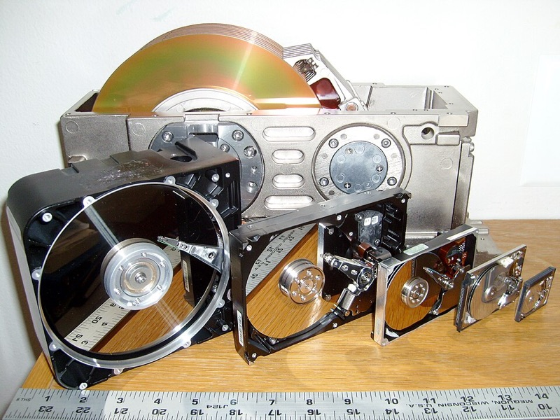
HDD history
Hard disk sizes through the years
- Shows
- Six opened HDDs. Their platter diameters are 8", 5.25", 3.5", 2.5", 1.8", and 1".
- Lesson
- Today only 3.5" (PCs/servers) and 2.5" (laptops/external) are still used.
Every plug and storage type you'll come across when selling, renting, or repairing computers. Every card uses a photo of the real thing.
Storage is where files are kept permanently. Not every SSD is NVMe, and a laptop hard disk is different from a desktop one. The physical shape decides where it fits; the type of connection decides how fast it is.
| Type | Shape | Read speed | Used in | Price for 1 TB |
|---|---|---|---|---|
| 3.5" HDD | Metal box 10 × 14.7 cm, spinning platters | ±150–250 MB/s | Desktop PCs, NAS, CCTV | Rp0.8–1.2M |
| 2.5" HDD | Smaller, 7 or 9.5 mm thick | ±100–140 MB/s | Older laptops, external HDDs | Rp0.7–1M |
| 2.5" SATA SSD | Same as a laptop HDD, but no moving parts | ±550 MB/s | Upgrading older PCs and laptops | Rp1.5–2.2M |
| M.2 SATA | M.2 stick, usually 2 notches (B+M key) | ±550 MB/s | Laptops from 2015–2019 | rarely sold new |
| M.2 NVMe | M.2 stick, usually 1 notch (M key) | ±3,500–14,000 MB/s | Every new PC and laptop | Rp2.5–3.5M |
| mSATA | Older small card | ±550 MB/s | Laptops from 2011–2015 | old stock |
| eMMC / UFS | A chip soldered to the board | ±250–1,000 MB/s | Cheap laptops, tablets | not replaceable |
1 TB prices are estimates for November 2026, while memory prices are high.



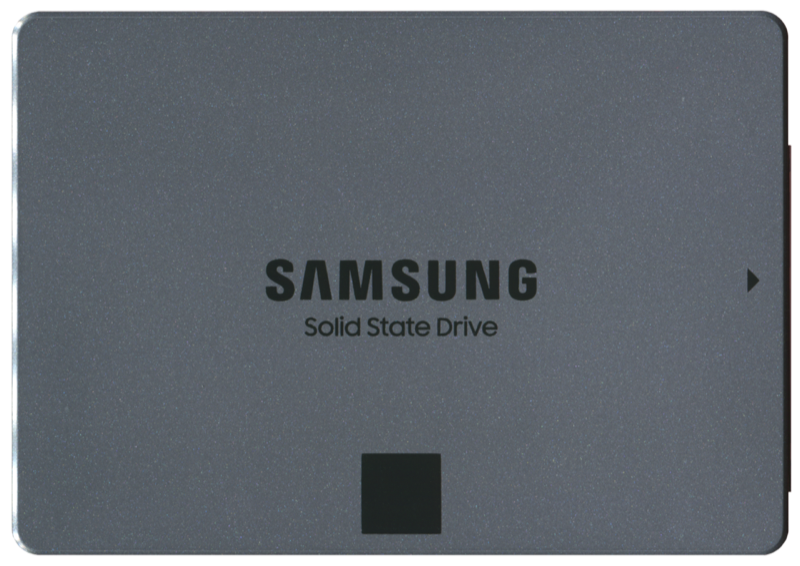
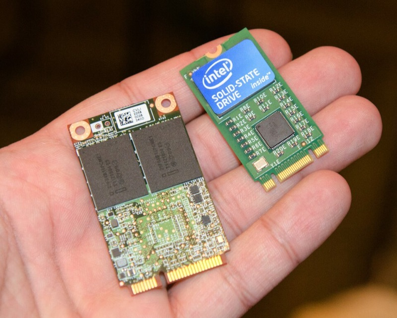

"Type" is the shape of the plug. Speed is set by the USB version. One shape can have many speeds, especially USB-C.
| Name on the box | Old name | Speed | Real examples |
|---|---|---|---|
| USB 2.0 (Hi-Speed) | – | 480 Mbps (±40 MB/s) | Mice, keyboards, printers, cheap flash drives |
| USB 5Gbps | USB 3.0 = 3.1 Gen 1 = 3.2 Gen 1 | 5 Gbps | Blue ports on PCs, modern flash drives |
| USB 10Gbps | USB 3.1 Gen 2 = 3.2 Gen 2 | 10 Gbps | External SSDs |
| USB 20Gbps | USB 3.2 Gen 2x2 | 20 Gbps | Fast external SSDs (USB-C only) |
| USB 40Gbps / 80Gbps | USB4 / USB4 v2 | 40–80 Gbps | New laptops, monitor docks |
| Thunderbolt 4 / 5 | – | 40 / 80 Gbps | Business laptops and Macs, lightning-bolt logo ⚡ |
USB names really are confusing because they've been changed several times. That's why USB-IF now recommends stating the speed directly, for example "USB 10Gbps". A blue USB-A port usually means USB 5Gbps or faster, but that's a manufacturer habit, not a rule.
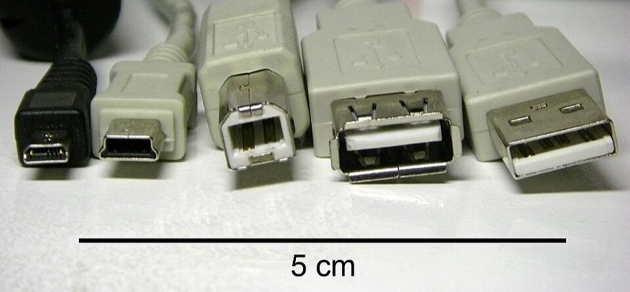

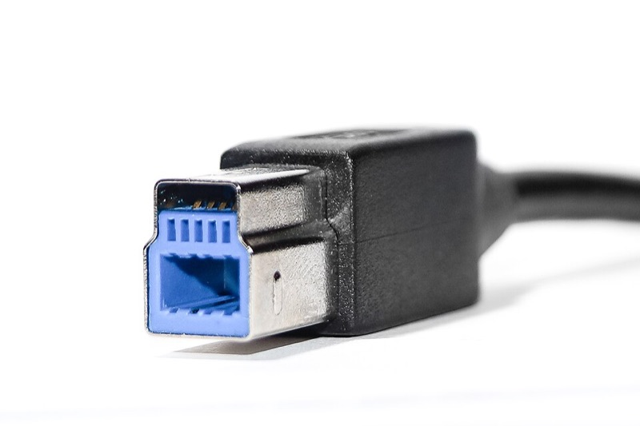
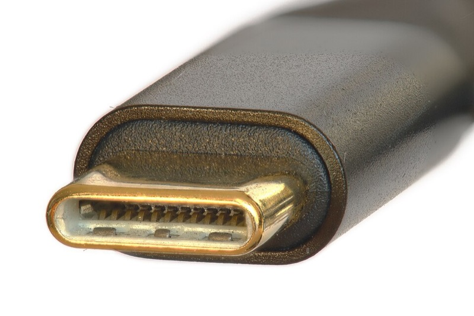
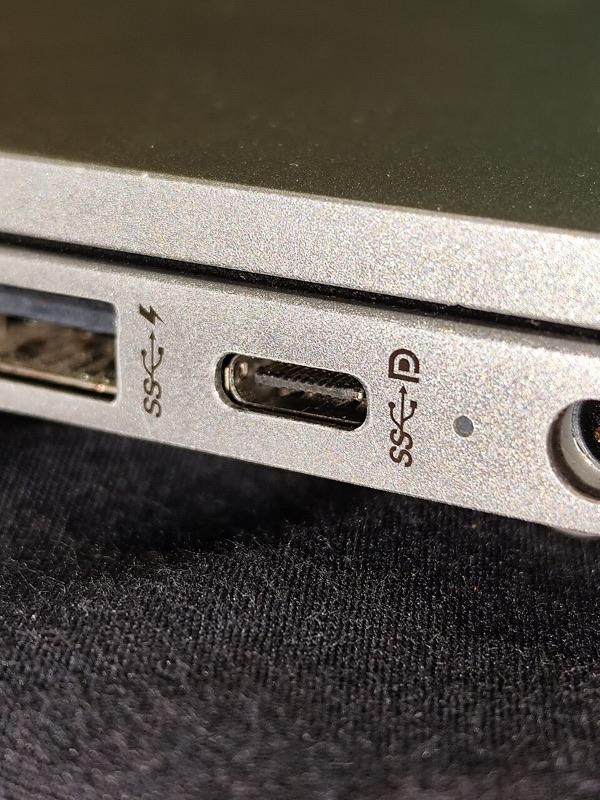
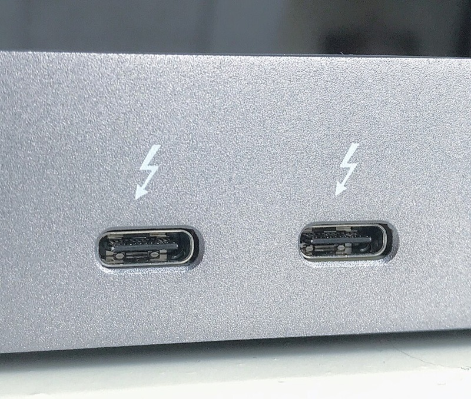
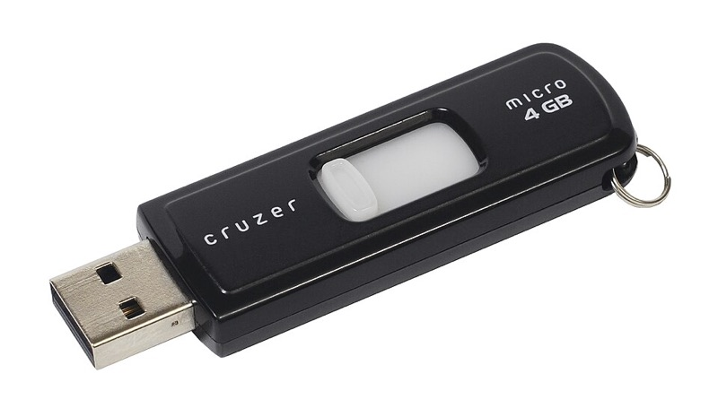
Monitor ports aren't only HDMI. Older office projectors still use VGA, gaming monitors suit DisplayPort better, and new laptops often just need USB-C.
| Port | Signal | Typical maximum | Still used in |
|---|---|---|---|
| HDMI 2.0 | Digital + audio | 4K 60 Hz | Office monitors, TVs, newer projectors |
| HDMI 2.1 | Digital + audio | 4K 120 Hz · 48 Gbps | Gaming monitors, new TVs, consoles |
| DisplayPort 1.4 | Digital + audio | 4K 120 Hz (more with DSC) | PC monitors, graphics cards |
| DisplayPort 2.1 | Digital + audio | up to 80 Gbps | The newest graphics cards and monitors |
| USB-C (DP Alt Mode) | DisplayPort over USB-C | depends on the port | Laptops, monitors with USB-C |
| DVI | Digital (DVI-I also analog) | ±2560×1600 (dual link) | Older office monitors and PCs |
| VGA | Analog, no audio | blurry above 1080p | Older projectors and PCs, servers |
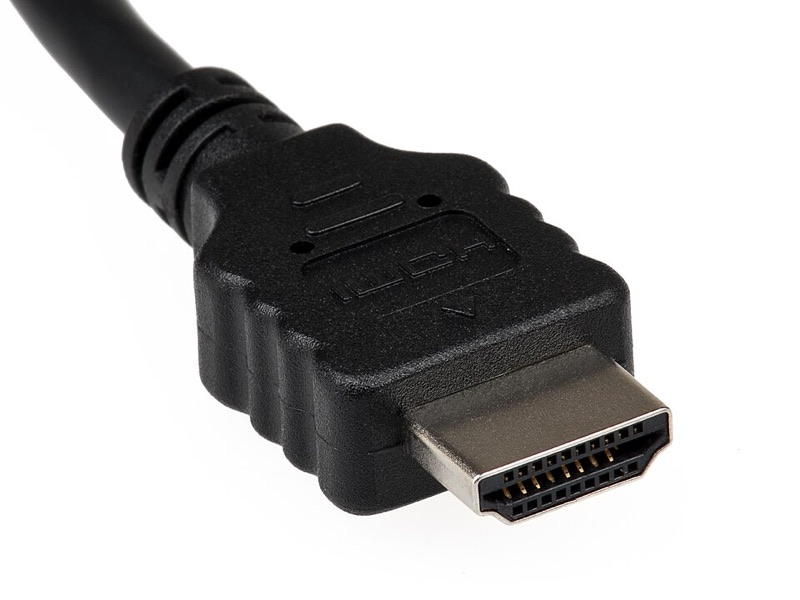
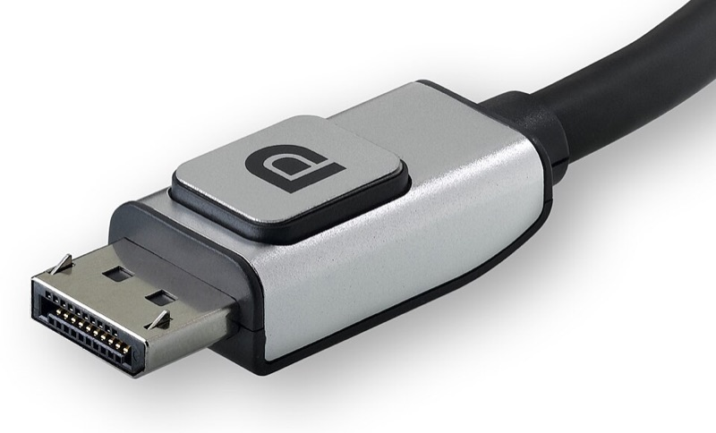


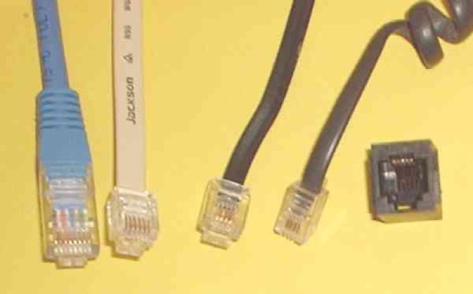

All of these come from the PSU or the motherboard. Their shapes are deliberately different so they can't be mixed up. If something has to be forced, it's almost certainly in the wrong place.
| Connector | From → to | Pins | Maximum power |
|---|---|---|---|
| ATX 24-pin | PSU → motherboard | 24 (20+4) | Main motherboard power |
| EPS 8-pin | PSU → CPU (top-left of the board) | 8 (4+4) | ±300 W per connector |
| PCIe 6+2-pin | PSU → graphics card | 6 or 8 | 75 W / 150 W |
| 12V-2x6 (12VHPWR) | PSU → newer graphics cards | 12 + 4 sense | 600 W |
| SATA power | PSU → SATA HDDs/SSDs | 15 | 3.3 V / 5 V / 12 V |
| Molex 4-pin | PSU → fans, older devices | 4 | Legacy |
| SATA data | Motherboard → SATA HDDs/SSDs | 7 | 6 Gbps |
EPS 8-pin (CPU) and PCIe 8-pin (GPU) look alike but are wired differently. Most PSUs label their cables "CPU" and "PCIe". Don't mix them up: a PCIe plug forced into the CPU socket can cause damage.


Laptop RAM and desktop RAM can't be swapped. Their pin counts differ.
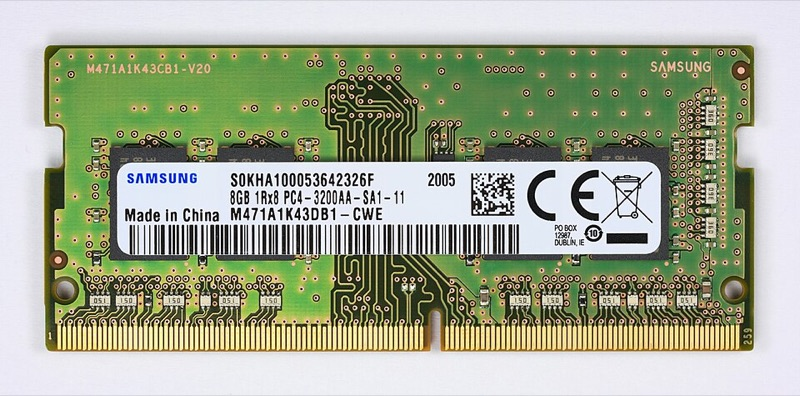